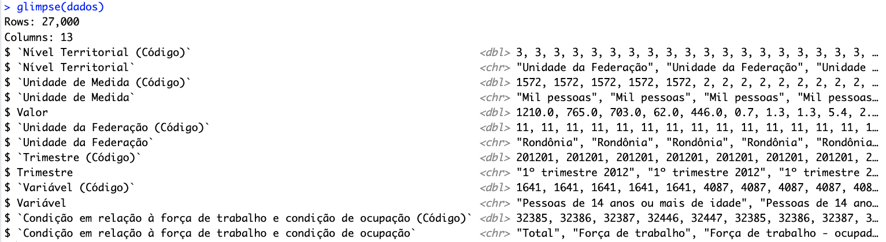
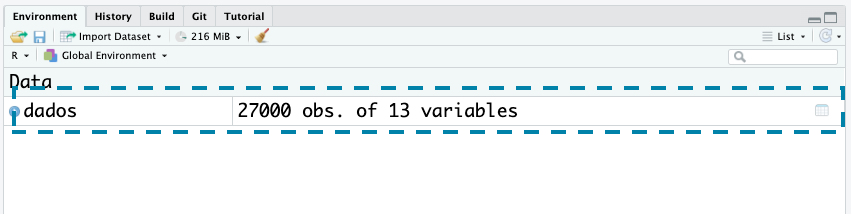
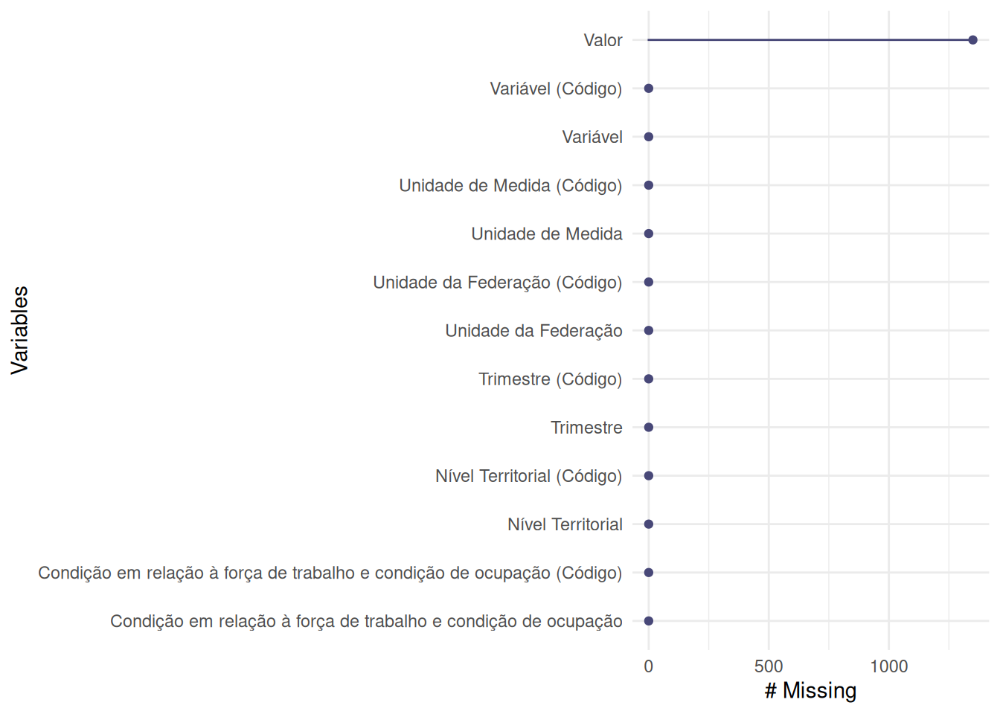
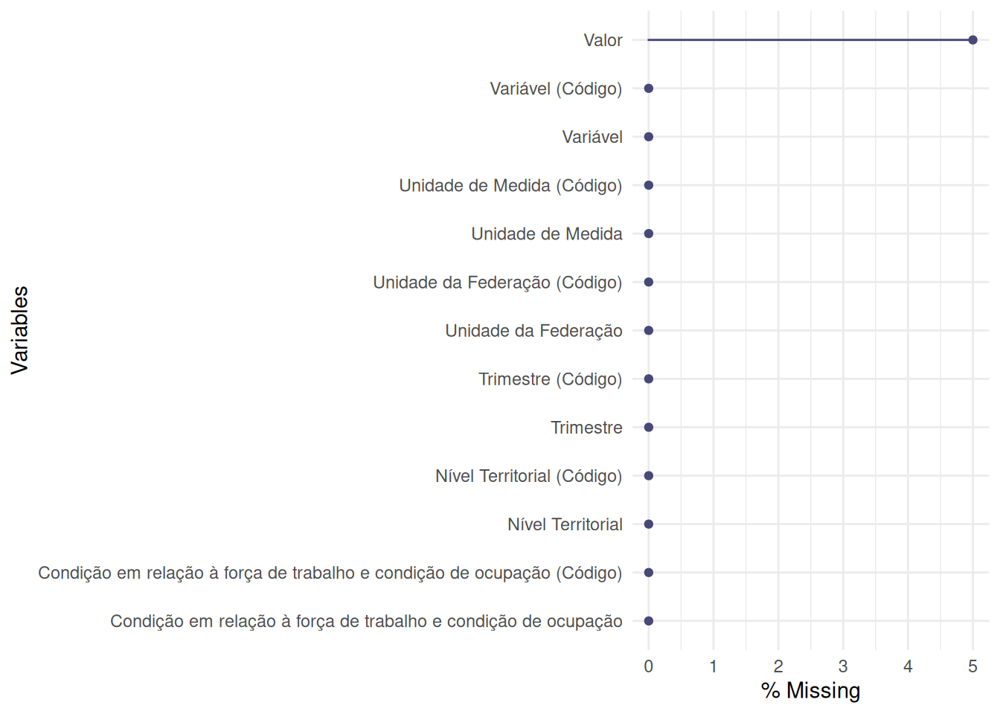

dados <- readr::read_rds("dados/sidrar_4092_bruto.rds")Conhecendo a base de dados
Nesta seção, vamos conhecer algumas funções que nos ajudarão a conhecer um pouco mais sobre a base de dados que estamos trabalhando.
Essa etapa é importante para:
Entender qual é a estrutura da base de dados: quais são as variáveis presentes, o que cada linha representa, entre outros.
Descobrir se há valores faltantes, em quais variáveis eles estão presentes e em que proporção.
Identificar o que é necessário fazer para arrumar a base de dados (isso vamos explorar posteriormente).
Dica
Sugestão: Ao longo deste capítulo, sugerimos que tente identificar o que é necessário para arrumar essa base de dados.
Vamos começar importando a base de dados que utilizaremos:
Estrutura da base de dados
Vamos começar conhecendo a estrutura da base de dados. Para isso, existem algumas funções para saber o número de colunas e linhas, os nomes das colunas, entre outras informações. Algumas delas apresentam as mesmas informações, mas de formas diferentes.
# Número de colunas
ncol(dados)[1] 13# Número de linhas
nrow(dados)[1] 27000# Número de linhas e colunas
dim(dados)[1] 27000 13# Nomes das colunas
names(dados) [1] "Nível Territorial (Código)"
[2] "Nível Territorial"
[3] "Unidade de Medida (Código)"
[4] "Unidade de Medida"
[5] "Valor"
[6] "Unidade da Federação (Código)"
[7] "Unidade da Federação"
[8] "Trimestre (Código)"
[9] "Trimestre"
[10] "Variável (Código)"
[11] "Variável"
[12] "Condição em relação à força de trabalho e condição de ocupação (Código)"
[13] "Condição em relação à força de trabalho e condição de ocupação" A função glimpse() do pacote {dplyr} apresenta informações como: número de linhas, número de colunas, nome e tipo de cada coluna, e os primeiros valores de cada coluna. Porém o texto resultante dependerá da largura do Console:
dplyr::glimpse(dados)
View
Uma outra função que é interessante é a View(). Ela nos permite visualizar a base de dados em uma nova janela, em formato de tabela. Porém, é importante tomar cuidado ao usá-la com bases de dados grandes, pois pode travar o RStudio dependendo.
Dica
Observação: Se você estiver com o {tidyverse} carregado, a função view() (com o v minúsculo) também está disponível. Ela é uma versão mais moderna da função View(), e tem algumas funcionalidades a mais. Para os fins dessa aula, podemos usar qualquer uma das duas.
Outra forma de acessar o View é clicando na linha do objeto no painel Environment do RStudio:

View(dados)
Sumário das variáveis
Em funções apresentadas anteriormente, como a names(), já conseguimos ter uma ideia de quais são as variáveis da base de dados. Mas é interessante ter mais informações, como: tipo de variável, quantidade de valores faltantes, entre outros.
Nessa etapa, conheceremos algumas funções que nos ajudarão a ter essas informações. Algumas apresentam as mesmas informações, mas de formas diferentes. Portanto, é interessante conhecer algumas delas, e escolher qual é a que melhor atende às nossas necessidades.
Aviso
Cuidado: as funções apresentadas a seguir calculam algumas estatísticas descritivas (como a média, mediana, desvio padrão, valor mínimo, valor máximo, entre outras) em variáveis numéricas. Porém, ainda não “arrumamos” a base de dados (faremos isso no capítulo Transformando dados), e os dados ainda não estão adequados para esses cálculos.
Alguns exemplos:
Várias colunas numéricas representam o código de uma categoria, e não faz sentido calcular a média desses códigos.
A variável
valorestá relacionada com a variávelUnidade de Medida. Neste momento, a tabela apresenta valores com diferentes unidades de medida, e não faz sentido calcular a média desses valores.
Falaremos sobre o cálculo de estatísticas descritivas no capítulo Análise Exploratória de Dados.
summary()
A função summary() é uma função do R base (ou seja, não precisamos carregar nenhum pacote para usá-la), e ela nos dá um sumário das variáveis da base de dados.
summary(dados) Nível Territorial (Código) Nível Territorial Unidade de Medida (Código)
Length:27000 Length:27000 Length:27000
Class :character Class :character Class :character
Mode :character Mode :character Mode :character
Unidade de Medida Valor Unidade da Federação (Código)
Length:27000 Min. : 0.3 Length:27000
Class :character 1st Qu.: 1.5 Class :character
Mode :character Median : 7.8 Mode :character
Mean : 862.0
3rd Qu.: 105.8
Max. :39480.0
NA's :1350
Unidade da Federação Trimestre (Código) Trimestre Variável (Código)
Length:27000 Length:27000 Length:27000 Length:27000
Class :character Class :character Class :character Class :character
Mode :character Mode :character Mode :character Mode :character
Variável
Length:27000
Class :character
Mode :character
Condição em relação à força de trabalho e condição de ocupação (Código)
Length:27000
Class :character
Mode :character
Condição em relação à força de trabalho e condição de ocupação
Length:27000
Class :character
Mode :character
skimr::skim()
O pacote {skimr} tem uma função chamada skim() que nos dá um sumário das variáveis da base de dados.
É interesante salvar o resultado da função em um objeto, para que possamos acessar as informações posteriormente, em formato de tabela.
skim_dados <- skimr::skim(dados)A seguir, podemos ver o resultado da função skim():
skim_dados| Name | dados |
| Number of rows | 27000 |
| Number of columns | 13 |
| _______________________ | |
| Column type frequency: | |
| character | 12 |
| numeric | 1 |
| ________________________ | |
| Group variables | None |
Variable type: character
| skim_variable | n_missing | complete_rate | min | max | empty | n_unique | whitespace |
|---|---|---|---|---|---|---|---|
| Nível Territorial (Código) | 0 | 1 | 1 | 1 | 0 | 1 | 0 |
| Nível Territorial | 0 | 1 | 20 | 20 | 0 | 1 | 0 |
| Unidade de Medida (Código) | 0 | 1 | 1 | 4 | 0 | 2 | 0 |
| Unidade de Medida | 0 | 1 | 1 | 11 | 0 | 2 | 0 |
| Unidade da Federação (Código) | 0 | 1 | 2 | 2 | 0 | 27 | 0 |
| Unidade da Federação | 0 | 1 | 4 | 19 | 0 | 27 | 0 |
| Trimestre (Código) | 0 | 1 | 6 | 6 | 0 | 50 | 0 |
| Trimestre | 0 | 1 | 17 | 17 | 0 | 50 | 0 |
| Variável (Código) | 0 | 1 | 4 | 4 | 0 | 4 | 0 |
| Variável | 0 | 1 | 35 | 89 | 0 | 4 | 0 |
| Condição em relação à força de trabalho e condição de ocupação (Código) | 0 | 1 | 5 | 5 | 0 | 5 | 0 |
| Condição em relação à força de trabalho e condição de ocupação | 0 | 1 | 5 | 30 | 0 | 5 | 0 |
Variable type: numeric
| skim_variable | n_missing | complete_rate | mean | sd | p0 | p25 | p50 | p75 | p100 | hist |
|---|---|---|---|---|---|---|---|---|---|---|
| Valor | 1350 | 0.95 | 862.03 | 2896.64 | 0.3 | 1.5 | 7.8 | 105.75 | 39480 | ▇▁▁▁▁ |
O resultado da função skim() é dividido em duas partes:
Data summary: informações gerais sobre a base de dados, como: nome do objeto, número de linhas, número de colunas, quantas colunas temos em cada tipo, e se a base está agrupada por alguma variável1.
Variable type: para cada tipo de variável presente na base de dados, temos informações como:
skim_variable: nome da variável.n_missing: número de valores faltantes.complete_rate: proporção de valores não faltantes (está relacionada com an_missing).- Outras colunas específicas segundo o tipo de variável.
A seguir, estão as informações que a função skim() retorna para os tipos de variáveis mais frequentes:
- character (dados de texto):
min: número mínimo de caracteres.max: número máximo de caracteres.empty: número de linhas contendo valores vazios (um valor vazio é um valor que contém apenas"").n_unique: número de valores únicos.whitespace: número de linhas contendo apenas espaços em branco.
- numeric (dados numéricos):
mean: média.sd: desvio padrão.p0: valor mínimo.p25: primeiro quartil.p50: mediana.p75: terceiro quartil.p100: valor máximo.hist: histograma dos valores.
- date (datas):
min: data mínima.max: data máxima.median: data mediana.n_unique: número de datas únicas.
- factor (dados categóricos):
ordered: os níveis do fator estão ordenados?n_unique: número de valores únicos do fator.top_counts: os valores mais frequentes do fator.
- logical (dados booleanos):
mean: média dos valores, considerando queTRUEé 1 eFALSEé 0.count: contagem dos valoresTRUEeFALSE.
Valores faltantes (NA)
A presença de valores faltantes é algo comum em bases de dados. Eles podem ocorrer por diversos motivos, como: não temos a informação, erros de digitação, entre outros.
É importante identificar onde estão esses valores, para que possamos nos atentar em análises futuras.
Existem algumas funções que nos ajudam a identificar a presença de valores faltantes na base de dados. O pacote {naniar} apresenta funções úteis para isso: a função gg_miss_var() cria uma visualição apresentando o nome das variáveis da base de dados, assim como a quantidade de valores faltantes em cada uma delas.
naniar::gg_miss_var(dados)- 1
- Valores absolutos

naniar::gg_miss_var(dados, show_pct = TRUE)- 1
- Valores relativos

Retornar algumas linhas da base de dados
Em situações onde trabalharmos com dados que possuem um número de linhas muito grande, não podemos utilizar a função View() para ver a tabela inteira.
Nesse caso, podemos ser interessante usar funções que retornam apenas algumas linhas da base de dados, como head(), tail(), slice_sample(), entre outras.
Antes de usá-las, vamos adicionar uma coluna que represente o número da linha, para que seja mais fácil identificar as linhas que estamos selecionando:
dados_com_n_linha <- tibble::rowid_to_column(dados, "n_linha")- 1
-
A função
rowid_to_column()adiciona uma coluna com o número da linha.
Agora podemos usar as funções para retornar algumas linhas da base de dados. Observe os resultados apresentados, e os valores na coluna n_linha:
# Exibindo as primeiras linhas
head(dados_com_n_linha) n_linha Nível Territorial (Código) Nível Territorial
1 1 3 Unidade da Federação
2 2 3 Unidade da Federação
3 3 3 Unidade da Federação
4 4 3 Unidade da Federação
5 5 3 Unidade da Federação
6 6 3 Unidade da Federação
Unidade de Medida (Código) Unidade de Medida Valor
1 1572 Mil pessoas 1210.0
2 1572 Mil pessoas 765.0
3 1572 Mil pessoas 703.0
4 1572 Mil pessoas 62.0
5 1572 Mil pessoas 446.0
6 2 % 0.7
Unidade da Federação (Código) Unidade da Federação Trimestre (Código)
1 11 Rondônia 201201
2 11 Rondônia 201201
3 11 Rondônia 201201
4 11 Rondônia 201201
5 11 Rondônia 201201
6 11 Rondônia 201201
Trimestre Variável (Código)
1 1º trimestre 2012 1641
2 1º trimestre 2012 1641
3 1º trimestre 2012 1641
4 1º trimestre 2012 1641
5 1º trimestre 2012 1641
6 1º trimestre 2012 4087
Variável
1 Pessoas de 14 anos ou mais de idade
2 Pessoas de 14 anos ou mais de idade
3 Pessoas de 14 anos ou mais de idade
4 Pessoas de 14 anos ou mais de idade
5 Pessoas de 14 anos ou mais de idade
6 Coeficiente de variação - Pessoas de 14 anos ou mais de idade
Condição em relação à força de trabalho e condição de ocupação (Código)
1 32385
2 32386
3 32387
4 32446
5 32447
6 32385
Condição em relação à força de trabalho e condição de ocupação
1 Total
2 Força de trabalho
3 Força de trabalho - ocupada
4 Força de trabalho - desocupada
5 Fora da força de trabalho
6 Total# Exibindo as últimas linhas
tail(dados_com_n_linha) n_linha Nível Territorial (Código) Nível Territorial
26995 26995 3 Unidade da Federação
26996 26996 3 Unidade da Federação
26997 26997 3 Unidade da Federação
26998 26998 3 Unidade da Federação
26999 26999 3 Unidade da Federação
27000 27000 3 Unidade da Federação
Unidade de Medida (Código) Unidade de Medida Valor
26995 2 % 31.6
26996 2 % NA
26997 2 % 1.1
26998 2 % 1.3
26999 2 % 7.4
27000 2 % 2.3
Unidade da Federação (Código) Unidade da Federação Trimestre (Código)
26995 53 Distrito Federal 202402
26996 53 Distrito Federal 202402
26997 53 Distrito Federal 202402
26998 53 Distrito Federal 202402
26999 53 Distrito Federal 202402
27000 53 Distrito Federal 202402
Trimestre Variável (Código)
26995 2º trimestre 2024 4104
26996 2º trimestre 2024 4105
26997 2º trimestre 2024 4105
26998 2º trimestre 2024 4105
26999 2º trimestre 2024 4105
27000 2º trimestre 2024 4105
Variável
26995 Distribuição percentual das pessoas de 14 anos ou mais de idade
26996 Coeficiente de variação - Distribuição percentual das pessoas de 14 anos ou mais de idade
26997 Coeficiente de variação - Distribuição percentual das pessoas de 14 anos ou mais de idade
26998 Coeficiente de variação - Distribuição percentual das pessoas de 14 anos ou mais de idade
26999 Coeficiente de variação - Distribuição percentual das pessoas de 14 anos ou mais de idade
27000 Coeficiente de variação - Distribuição percentual das pessoas de 14 anos ou mais de idade
Condição em relação à força de trabalho e condição de ocupação (Código)
26995 32447
26996 32385
26997 32386
26998 32387
26999 32446
27000 32447
Condição em relação à força de trabalho e condição de ocupação
26995 Fora da força de trabalho
26996 Total
26997 Força de trabalho
26998 Força de trabalho - ocupada
26999 Força de trabalho - desocupada
27000 Fora da força de trabalho# "Sorteando" linhas
dplyr::slice_sample(dados_com_n_linha, n = 5) n_linha Nível Territorial (Código) Nível Territorial
1 8521 3 Unidade da Federação
2 8425 3 Unidade da Federação
3 3387 3 Unidade da Federação
4 2685 3 Unidade da Federação
5 25250 3 Unidade da Federação
Unidade de Medida (Código) Unidade de Medida Valor
1 1572 Mil pessoas 2549.0
2 1572 Mil pessoas 1100.0
3 2 % 2.2
4 1572 Mil pessoas 1233.0
5 2 % 1.7
Unidade da Federação (Código) Unidade da Federação Trimestre (Código)
1 22 Piauí 201803
2 22 Piauí 201702
3 14 Roraima 201604
4 13 Amazonas 202003
5 52 Goiás 201501
Trimestre Variável (Código)
1 3º trimestre 2018 1641
2 2º trimestre 2017 1641
3 4º trimestre 2016 4087
4 3º trimestre 2020 1641
5 1º trimestre 2015 4087
Variável
1 Pessoas de 14 anos ou mais de idade
2 Pessoas de 14 anos ou mais de idade
3 Coeficiente de variação - Pessoas de 14 anos ou mais de idade
4 Pessoas de 14 anos ou mais de idade
5 Coeficiente de variação - Pessoas de 14 anos ou mais de idade
Condição em relação à força de trabalho e condição de ocupação (Código)
1 32385
2 32447
3 32386
4 32447
5 32447
Condição em relação à força de trabalho e condição de ocupação
1 Total
2 Fora da força de trabalho
3 Força de trabalho
4 Fora da força de trabalho
5 Fora da força de trabalhoConhecendo os valores únicos de uma coluna
Para variáveis categóricas ou de texto, é interessante conhecer os valores únicos presentes.
Para acessar uma coluna específica, utilize o $. Elas retornarão como vetores, e poderemos usar as funções que já conhecemos. Ex: dados$ano.
Dica
Dica: após escrever o nome_do_dataframe$, aperte tab para que o RStudio faça sugestões de colunas da base.
A função unique() retorna os valores únicos de um vetor. Exemplo:
unique(dados$`Unidade de Medida`)[1] "Mil pessoas" "%" Note que, nesse caso, foi necessário colocar uma crase para identificar o nome da coluna. Isso acontece porque a coluna contém espaços em branco e, por isso, o R entenderia que o nome da coluna é Unidade e de e Medida. Com a crase, o R entende que o nome da coluna é Unidade de Medida.
Dica
É uma boa prática evitar espaços em branco e caracteres especiais nos nomes das colunas. Em Transformando dados > Padronizar nome das colunas apresentaremos uma forma de fazer isso!
Outra forma de extrair o conteúdo de uma coluna é utilizando o operador [[:
unique(dados[["Unidade de Medida"]])[1] "Mil pessoas" "%" O resultado é o mesmo, mas dessa forma utilizamos o nome da coluna em texto (string) para acessar a coluna.
Sugestão de exercícios
Nesses exercícios a seguir, vamos utilizar a tabela como deputadas e deputados que já estiveram em exercício na Câmara dos Deputados.
deputados <- readr::read_csv2("https://dadosabertos.camara.leg.br/arquivos/deputados/csv/deputados.csv")Responda as perguntas a seguir:
- Conhecendo a estrutura da base de dados:
- Quantas colunas e linhas temos na base de dados?
- O que cada linha representa?
- Quais são as colunas presentes na colunas?
- Os nomes das colunas estão aceitáveis (por exemplo, sem espaços, acentos, caracteres especiais)?
- Qual é o tipo de cada variável?
- Existe alguma variável que deveria ser de outro tipo?
- Valores faltantes (missing values):
- Em quais variáveis temos valores faltantes?
- Qual é a variável com a maior quantidade de valores faltantes?
- O que significa os valores faltantes na coluna
dataFalecimento?
- Conhecendo variáveis com categorias:
- Quais são os valores únicos para a variável
siglaSexo?
- Quais são os valores únicos para a variável
Notas de rodapé
Ainda não abordamos o conceito de grupos, então isso ficará mais claro posteriormente.↩︎